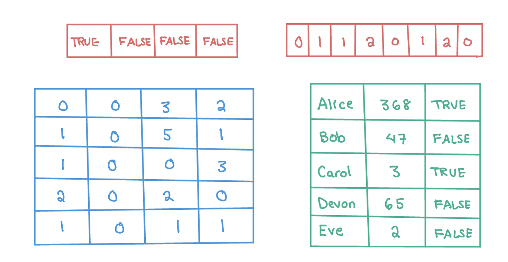
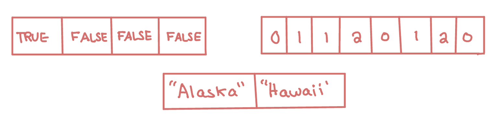
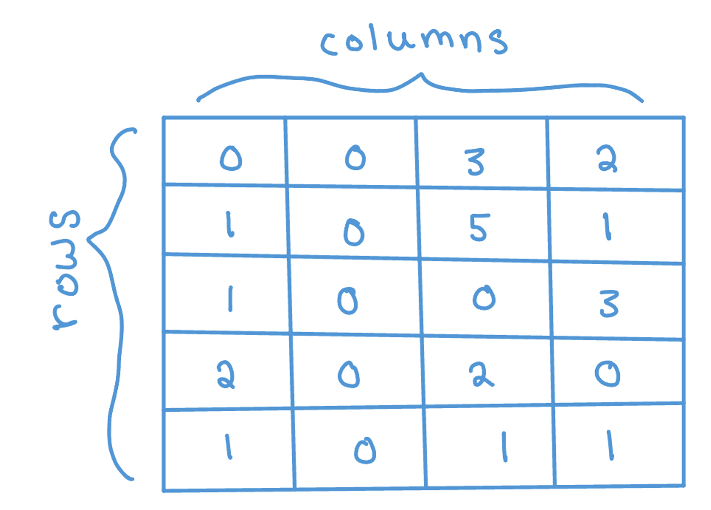
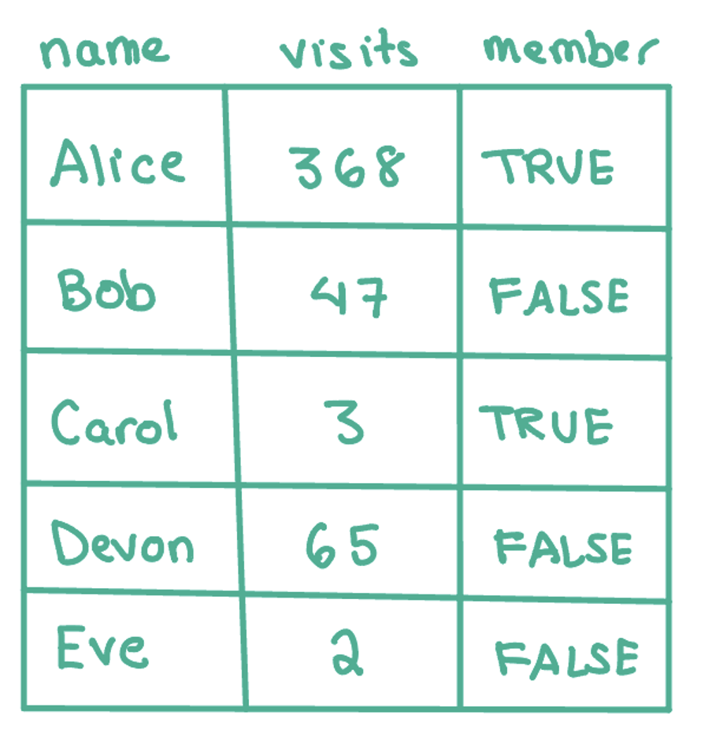
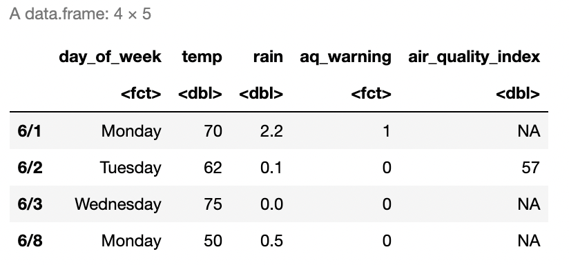
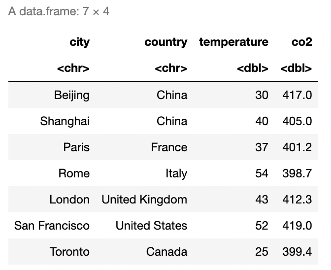
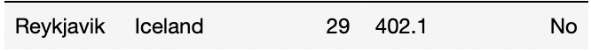

ex_num <- 42 Data Structures in R
In this chapter, we will demonstrate the key data structures in R. Data structures are how information is stored in R, and the data structures that we use inform R how to interpret our code. Any object is a named instance of a data structure. For example, the object ex_num below is a vector of numeric type.
The main data structures in R are vectors, factors, matrices, arrays, lists, and data frames. These structures are distinguished by their dimensions and by the type of data they store. For example, we might have a 1-dimensional vector that contains all numeric values, or we could have a 2-dimensional data frame with rows and columns where we might have one numeric column and one character column. In the image below, there are two vectors with different types (character and numeric) on top and then a matrix and data frame below. In this chapter, we will cover each data structure except for arrays. Arrays are an extension of matrices that allow for data that is more than 2-dimensional and are not needed for the applications covered in this book.

2.1 Data Types
Each individual value in R has a type: logical, integer, double, or character. We can think of these as the building blocks of all data structures. Below, we can use the typeof() function to find the type of our vector from above, which shows that the value of ex_num is a double. A double is a numeric value with a stored decimal.
typeof(ex_num)
#> [1] "double"On the other hand, an integer is a whole number that does not contain a decimal. We now create an integer object ex_int. To indicate to R that we want to restrict our values to integer values, we use an L after the number.
ex_int <- 4L
typeof(ex_int)
#> [1] "integer"Both ex_num and ex_int are numeric objects, but we can also work with two other types of objects: characters (e.g. “php”, “stats”) and booleans (e.g. TRUE, FALSE), also known as logicals.
ex_bool <- TRUE
ex_char <- "Alice"
typeof(ex_bool)
#> [1] "logical"
typeof(ex_char)
#> [1] "character"One important characteristic of logical objects is that R will also interpret them as 0/1. This means they can be added as in the example below: each TRUE has a value of 1 and each FALSE has a value of 0.
TRUE+FALSE+TRUE
#> [1] 2To create all of the above objects, we used the assignment operator <-, which we discussed in Chapter 1. You may see code elsewhere that uses an = instead. While = can also be used for assignment, it is more standard practice to use <-.
2.2 Vectors
In the examples above, we created objects with a single value. R actually uses a vector of length 1 to store this information. Vectors are 1-dimensional data structures that can store multiple data values of the same type (e.g. character, boolean, or numeric).

We can confirm this by using the is.vector() function, which returns whether or not the inputted argument is a vector.
is.vector(ex_bool)
#> [1] TRUEOne way to create a vector with multiple values is to use the combine function c(). Below we create two vectors: one with the days of the week and one with the amount of rain on each day. The first vector has all character values, and the second one has all numeric values.
days <- c("Monday", "Tuesday", "Wednesday", "Thursday", "Friday")
rain <- c(5, 0.1, 0, 0, 0.4)Remember, vectors cannot store objects of different types. Because of this, in the code below, R automatically converts the numeric value to be a character in order to store these values in a vector together.
c("Monday", 5)
#> [1] "Monday" "5"The class() function returns the data structure of an object. If we check the classes of these two objects using the class() function, we will see that R tells us that the first is a character vector and the second is a numeric vector. This matches the data type in this case.
class(days)
#> [1] "character"
class(rain)
#> [1] "numeric"What happens when we create an empty vector? What is the class?
ex_empty <- c()
class(ex_empty)
#> [1] "NULL"In this case, there is no specified type yet. If we wanted to specify the type, we could make an empty vector using the vector() function.
ex_empty <- vector(mode = "numeric")
class(ex_empty)
#> [1] "numeric"Another way to create a vector is with the rep() or seq() functions. The first function rep(x, times) takes in a vector x and a number of times times and outputs x repeated that many times. Let’s try this with a single value below. The second function seq(from, to, step) takes in a numeric starting value from, end value to, and step size step and returns a sequence from from in increments of step until a maximum value of to is reached.
rep(0, 5)
#> [1] 0 0 0 0 0
rep("Monday", 4)
#> [1] "Monday" "Monday" "Monday" "Monday"
seq(1, 5, 1)
#> [1] 1 2 3 4 5
seq(0, -10, -2)
#> [1] 0 -2 -4 -6 -8 -102.2.1 Indexing a Vector
Once we have a vector, we may want to access certain values stored in that vector. To do so, we index the vector using the position of each value: the first value in the vector has index 1, the second value has index 2, etc. When we say a vector is 1-dimensional, we mean that we can define the position of each value by a single index. To index the vector, we then use square brackets [] after the vector name and provide the position. Below, we use these indices to find the value at index 1 and the value at index 4.
days[1]
#> [1] "Monday"
days[4]
#> [1] "Thursday"We can either access a single value or a subset of values using a vector of indices. Let’s see what happens when we use a vector of indices c(1,4) and then try using -c(1,4) and see what happens then. In the first case, we get the values at index 1 and at index 4. In the second case, we get all values except at those indices. The - indicates that we want to remove rather than select these indices.
days[c(1,4)]
#> [1] "Monday" "Thursday"
days[-c(1,4)]
#> [1] "Tuesday" "Wednesday" "Friday"However, always indexing by the index value can sometimes be difficult or inefficient. One extra feature of vectors is that we can associate a name with each value. Below, we update the names of the vector rain to be the days of the week and then find Friday’s rain count by indexing with the name.
names(rain) <- days
print(rain)
#> Monday Tuesday Wednesday Thursday Friday
#> 5.0 0.1 0.0 0.0 0.4
rain["Friday"]
#> Friday
#> 0.4The last way to index a vector is to use TRUE and FALSE values. If we have a vector of booleans that is the same length as our original vector, then this will return all the values that correspond to a TRUE value. For example, indexing the days vector by the logical vector ind_bools below will return its first and fourth values. We will see more about using logic to access certain values later on.
ind_bools <- c(TRUE, FALSE, FALSE, TRUE, FALSE)
days[ind_bools]
#> [1] "Monday" "Thursday"2.2.2 Editing a Vector and Calculations
The mathematical operators we saw in the last chapter (+, -, *, /, ^, %%) can all be applied to numeric vectors and will be applied element-wise. That is, in the code below, the two vectors are added together by index. This holds true for some of the built-in math functions as well:
exp()- exponentiallog()- logsqrt()- square rootabs()- absolute valueround()- round to nearest integer valueceiling()- round up to the nearest integer valuefloor()- round down to the nearest integer value
c(1,2,3) + c(1,1,1)
#> [1] 2 3 4
c(1,2,3) + 1 # equivalent to the code above
#> [1] 2 3 4
sqrt(c(1,4,16))
#> [1] 1 2 4After we create a vector, we may need to update its values. For example, we may want to change a specific value. We can do so using indexing. Below, we update the rain value for Friday using the assignment operator.
rain["Friday"] <- 0.5
rain
#> Monday Tuesday Wednesday Thursday Friday
#> 5.0 0.1 0.0 0.0 0.5Further, we may need to add extra entries. We can do so using the c() function again but this time passing in the vector we want to add to as our first argument. This will create a single vector with all previous and new values. Below, we add two days to both vectors and then check the length of the updated vector rain. The length() function returns the length of a vector.
length(rain)
#> [1] 5
days <- c(days,"Saturday","Sunday") # add the weekend with no rain
rain <- c(rain,0,0)
length(rain)
#> [1] 7We can also call some useful functions on vectors. For example, the sum(), max(), and min() functions will return the sum, maximum value, and minimum value of a vector, respectively.
2.2.3 Practice Question
Create a vector of the odd numbers from 1 to 11 using the seq() function. Then, find the third value in the vector using indexing, which should have value 5.
# Insert your solution here:2.2.4 Common Vector Functions
Below we list some of the most common vector functions that are available in base R. All of these functions assume that the vector is numeric. If we pass the function a logical vector, R will convert the vector to 0/1 first, and if we pass the function a character vector, R will give us an error message.
sum()- summationmedian()- median valuemean()- meansd()- standard deviationvar()- variancemax()- maximum valuewhich.max()- index of the first element with the maximum valuemin()- minimum valuewhich.min()- index of the first element with the minimum value
Try these out using the vector rain. Note that R is case sensitive - Mean() is considered different from mean(), so if we type Mean(rain) R will tell us that it cannot find this function.
mean(rain)
#> [1] 0.8
min(rain)
#> [1] 0
which.min(rain)
#> Wednesday
#> 3We may also be interested in the order of the values. The sort() function sorts the values of a vector, whereas the order() function returns the permutation of the elements to be in sorted order. The last line of code below sorts the days of the week from smallest to largest rain value.
rain
#> Monday Tuesday Wednesday Thursday Friday
#> 5.0 0.1 0.0 0.0 0.5 0.0 0.0
order(rain)
#> [1] 3 4 6 7 2 5 1
days[order(rain)]
#> [1] "Wednesday" "Thursday" "Saturday" "Sunday" "Tuesday"
#> [6] "Friday" "Monday"Both of these functions have an extra possible argument decreasing, which has a default value of FALSE. We can specify this to be TRUE to find the days of the week sorted from largest to smallest rainfall.
days[order(rain, decreasing=TRUE)]
#> [1] "Monday" "Friday" "Tuesday" "Wednesday" "Thursday"
#> [6] "Saturday" "Sunday"2.3 Factors
A factor is a special kind of vector that behaves exactly like a regular vector except that it represents values from a category. In particular, a factor keeps track of all possible values of that category, which are called the levels of the factor. Factors will be especially helpful when we start getting into data analysis and have categorical columns. The as.factor() function will convert a vector to a factor.
days <- c("Monday", "Tuesday", "Wednesday", "Monday", "Thursday", "Wednesday")
days_fct <- as.factor(days)
class(days_fct)
#> [1] "factor"
levels(days_fct)
#> [1] "Monday" "Thursday" "Tuesday" "Wednesday"Above, we did not specify the possible levels for our column. Instead, R found all values in the vector days and set these equal to the levels of the factor. Because of this, if we try to change one of the levels to ‘Friday’, we will get an error. Uncomment the line below to see the error message.
#days_fct[2] <- "Friday" We can avoid this error by specifying the levels using the factor() function instead of the as.factor() function.
days <- c("Monday", "Tuesday", "Wednesday", "Monday", "Thursday", "Wednesday")
days_fct <- factor(days,
levels = c("Monday", "Tuesday", "Wednesday", "Thursday",
"Friday", "Saturday", "Sunday"))
class(days_fct)
#> [1] "factor"
levels(days_fct)
#> [1] "Monday" "Tuesday" "Wednesday" "Thursday" "Friday"
#> [6] "Saturday" "Sunday"
days_fct[2] <- "Friday"Factors can also be used for numeric vectors. For example, we might have a vector that is 0/1 that represents whether or not a day is a weekend. This can also only take on certain values (0 or 1).
weekend <- as.factor(c(1, 0, 0, 0, 1, 1))
levels(weekend)
#> [1] "0" "1"2.4 Matrices
Matrices are similar to vectors in that they store data of the same type, but matrices are two-dimensional (as opposed to one-dimensional vectors), and consist of both rows and columns.

Below, we create a matrix reporting the daily rainfall over multiple weeks. We can create a matrix using the matrix(data, nrow, ncol, byrow) function. This creates a nrow by ncol matrix from the vector data values filling in by row if byrow is TRUE and by column otherwise. Run the code below. Then, change the last argument to byrow=FALSE and see what happens to the values.
rainfall <- matrix(c(5,6,0.1,3,0,1,0,1,0.4,0.2,0.5,0.3,0,0), ncol=7, nrow=2, byrow=TRUE)
rainfall
#> [,1] [,2] [,3] [,4] [,5] [,6] [,7]
#> [1,] 5 6.0 0.1 3.0 0.0 1 0
#> [2,] 1 0.4 0.2 0.5 0.3 0 0We can find the dimensions of a matrix using the nrow(), ncol(), or dim() functions, which return the number of rows, the number of columns, and both the number of rows and columns, respectively.
nrow(rainfall)
#> [1] 2
ncol(rainfall)
#> [1] 7
dim(rainfall)
#> [1] 2 72.4.1 Indexing a Matrix
Since matrices are two-dimensional, a single value is indexed by both its row number and its column number. This means that to access a subset of values in a matrix, we need to provide row and column indices. Below, we access a single value in the 1st row and the 4th column. The first value is always the row index and the second value is always the column index.
rainfall[1,4]
#> [1] 3As before, we can also provide multiple indices to get multiple values. Below, we choose multiple columns but we can also choose multiple rows (or multiple rows and multiple columns!).
rainfall[1,c(4,5,7)]
#> [1] 3 0 0As with vectors, we can also use booleans to index a matrix by providing boolean values for the rows and/or columns. Note that below we give a vector for the row indices and no values for the columns. Since we did not specify any column indices, this will select all of them.
rainfall[c(FALSE, TRUE), ]
#> [1] 1.0 0.4 0.2 0.5 0.3 0.0 0.0Let’s do the opposite and select some columns and all rows.
rainfall[ ,c(TRUE, TRUE, FALSE, FALSE, FALSE, FALSE, FALSE)]
#> [,1] [,2]
#> [1,] 5 6.0
#> [2,] 1 0.4As with vectors, we can specify row names and column names to access entries instead of using indices. The colnames() and rownames() functions allow us to specify the column and row names, respectively.
colnames(rainfall) <- c("Monday", "Tuesday", "Wednesday", "Thursday",
"Friday", "Saturday", "Sunday")
rownames(rainfall) <- c("Week1", "Week2")
rainfall["Week1",c("Friday","Saturday")]
#> Friday Saturday
#> 0 12.4.2 Editing a Matrix
If we want to change the values in a matrix, we need to first index those values and then assign them the new value(s). Below, we change a single entry to be 3 and then update several values to all be 0. Note that we do not provide multiple 0’s on the right-hand side, as R will infer that all values should be set to 0.
rainfall["Week1", "Friday"] <- 3rainfall["Week1", c("Monday", "Tuesday")] <- 0
print(rainfall)
#> Monday Tuesday Wednesday Thursday Friday Saturday Sunday
#> Week1 0 0.0 0.1 3.0 3.0 1 0
#> Week2 1 0.4 0.2 0.5 0.3 0 0Further, we can append values to our matrix by adding rows or columns through the rbind() and cbind() functions. The first function appends a row (or multiple rows) to a matrix and the second appends a column (or multiple columns). Note that below I provide a row and column name when passing in the additional data. If I hadn’t specified these names, then those rows and columns would not be named.
rainfall <- rbind(rainfall, "Week3" = c(0.4, 0.0, 0.0, 0.0, 1.2, 2.2, 0.0))
rainfall <- cbind(rainfall, "Total" = c(7.1, 2.4, 3.8))
print(rainfall)
#> Monday Tuesday Wednesday Thursday Friday Saturday Sunday Total
#> Week1 0.0 0.0 0.1 3.0 3.0 1.0 0 7.1
#> Week2 1.0 0.4 0.2 0.5 0.3 0.0 0 2.4
#> Week3 0.4 0.0 0.0 0.0 1.2 2.2 0 3.8Here is an example where we bind two matrices by column. Note that whenever we bind two matrices together, we have to be sure that their dimensions are compatible and that they are of the same type.
A <- matrix(c(1,2,3,4), nrow=2)
B <- matrix(c(5,6,7,8), nrow=2)
C <- cbind(A, B)
C
#> [,1] [,2] [,3] [,4]
#> [1,] 1 3 5 7
#> [2,] 2 4 6 8As with vectors, most mathematical operators (+, -, *, / etc.) are applied element-wise in R.
A+B
#> [,1] [,2]
#> [1,] 6 10
#> [2,] 8 12exp(C)
#> [,1] [,2] [,3] [,4]
#> [1,] 2.72 20.1 148 1097
#> [2,] 7.39 54.6 403 29812.4.3 Practice Question
Create a 3x4 matrix of all 1’s using the rep() and matrix() functions. Then select the first and third columns using indexing which will return a 3x2 matrix of all ones.
# Insert your solution here:2.5 Data Frames
Matrices can store data like the rainfall data, where everything is of the same type. However, if we want to capture more complex data records, we also want to allow for different measurement types: this is where data frames come in. A data frame is like a matrix in that data frames are two-dimensional, but unlike matrices, data frames allow for each column to be a different type. In this case, each row corresponds to a single data entry (or observation) and each column corresponds to a different variable.

For example, suppose that, for every day in a study, we want to record the temperature, rainfall, and day of the week. Temperature and rainfall can be numeric values, but day of the week will be character type. We create a data frame using the data.frame() function. Note that I am providing column names for each vector (column).
The head() function prints the first six rows of a data frame (to avoid printing very large datasets). In our case, all the data is shown because we only created four rows. The column names are displayed as well as their type. By contrast, the tail() function prints the last six rows of a data frame.
weather_data <- data.frame(day_of_week = c("Monday","Tuesday","Wednesday","Monday"),
temp = c(70,62,75,50), rain = c(5,0.1,0.0,0.5))
head(weather_data)
#> day_of_week temp rain
#> 1 Monday 70 5.0
#> 2 Tuesday 62 0.1
#> 3 Wednesday 75 0.0
#> 4 Monday 50 0.5The dim(), nrow(), and ncol() functions return the dimensions, number of rows, and number of columns of a data frame, respectively.
dim(weather_data)
#> [1] 4 3
nrow(weather_data)
#> [1] 4
ncol(weather_data)
#> [1] 3The column names can be found (or assigned) using the colnames() or names() function. These were specified when I created the data. On the other hand, the row names are currently the indices.
colnames(weather_data)
#> [1] "day_of_week" "temp" "rain"
rownames(weather_data)
#> [1] "1" "2" "3" "4"
names(weather_data)
#> [1] "day_of_week" "temp" "rain"We update the row names to be more informative as with a matrix using the rownames() function.
rownames(weather_data) <- c("6/1", "6/2", "6/3", "6/8")
head(weather_data)
#> day_of_week temp rain
#> 6/1 Monday 70 5.0
#> 6/2 Tuesday 62 0.1
#> 6/3 Wednesday 75 0.0
#> 6/8 Monday 50 0.52.5.1 Indexing a Data Frame
We can select elements of the data frame using its indices in the same way as we did with matrices. Below, we access a single value and then a subset of our data frame. The subset returned is itself a data frame. Note that the second line below returns a data frame.
weather_data[1,2]
#> [1] 70
weather_data[1,c("day_of_week","temp")]
#> day_of_week temp
#> 6/1 Monday 70Another useful way to access the columns of a data frame is by using the $ accessor and the column name.
weather_data$day_of_week
#> [1] "Monday" "Tuesday" "Wednesday" "Monday"
weather_data$temp
#> [1] 70 62 75 50The column day_of_week is a categorical column, but it can only take on a limited number of values. For this kind of column, it is often useful to convert that column to a factor as we did before.
weather_data$day_of_week <- factor(weather_data$day_of_week)
levels(weather_data$day_of_week)
#> [1] "Monday" "Tuesday" "Wednesday"2.5.2 Editing a Data Frame
As with matrices, we can change values in a data frame by indexing those entries.
weather_data[1, "rain"] <- 2.2
weather_data
#> day_of_week temp rain
#> 6/1 Monday 70 2.2
#> 6/2 Tuesday 62 0.1
#> 6/3 Wednesday 75 0.0
#> 6/8 Monday 50 0.5The rbind() functions and cbind() functions also work for data frames in the same way as for matrices. However, another way to add a column is to directly use the $ accessor. Below, we add a categorical column called aq_warning, indicating whether there was an air quality warning that day.
weather_data$aq_warning <- as.factor(c(1, 0, 0, 0))
weather_data
#> day_of_week temp rain aq_warning
#> 6/1 Monday 70 2.2 1
#> 6/2 Tuesday 62 0.1 0
#> 6/3 Wednesday 75 0.0 0
#> 6/8 Monday 50 0.5 02.5.3 Practice Question
Add a column to weather_data called air_quality_index using the rep() function so that all values are NA (the missing value in R). Then, index the second value of this column and set the value to be 57. The result should look like this:

# Insert your solution here:2.6 Lists
A data frame is actually a special kind of another data structure called a list, which is a collection of objects under the same name. These objects can be vectors, matrices, data frames, or even other lists! There does not have to be any relation in size, type, or other attribute between different members of the list. Below, we create an example list using the list() function, which takes in a series of objects. What are the types of each element of the list? We can access each element using the index, but here we need to use double brackets.
ex_list <- list("John", c("ibuprofen", "metformin"), c(136, 142, 159))
print(ex_list)
#> [[1]]
#> [1] "John"
#>
#> [[2]]
#> [1] "ibuprofen" "metformin"
#>
#> [[3]]
#> [1] 136 142 159
ex_list[[2]]
#> [1] "ibuprofen" "metformin"More often, however, it is useful to name the elements of the list for easier access. Let’s create this list again but this time give names to each object.
ex_list <- list(name="John", medications = c("ibuprofen", "metformin"),
past_weights = c(136, 142, 159))
print(ex_list)
#> $name
#> [1] "John"
#>
#> $medications
#> [1] "ibuprofen" "metformin"
#>
#> $past_weights
#> [1] 136 142 159
ex_list$medications
#> [1] "ibuprofen" "metformin"To edit a list, we can use indexing to access different objects in the list and then assign them to new values. Additionally, we can add objects to the list using the $ accessor.
ex_list$supplements <- c("vitamin D", "biotin")
ex_list$supplements[2] <- "collagen"
ex_list
#> $name
#> [1] "John"
#>
#> $medications
#> [1] "ibuprofen" "metformin"
#>
#> $past_weights
#> [1] 136 142 159
#>
#> $supplements
#> [1] "vitamin D" "collagen"2.7 Recap Video
2.8 Exercises
- Recreate the following data frame in R, where
temperatureandco2represent the average temperature in Fahrenheit and the average \(\text{CO}_2\) concentrations in \(\text{mg}/\text{m}^3\) for the month of January 2008, and name itcity_air_quality.

Create a character vector named
precipitationwith entriesYesorNoindicating whether or not there was more precipitation than average in January 2008 in these cities (you can make this information up yourself). Then, append this vector to thecity_air_qualitydata frame as a new column.Convert the categorical column
precipitationto a factor. Then, add the following row to the data framecity_air_qualityusing therbind()function:

- Use single square brackets to access the precipitation and \(\text{CO}_2\) concentration entries for San Francisco and Paris in your data frame. Then, create a list
city_listwhich contains two lists, one for San Francisco and one for Paris, where each inner list contains the city name, precipitation, and \(\text{CO}_2\) concentration information for that city.